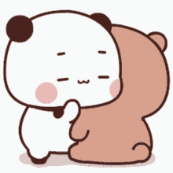
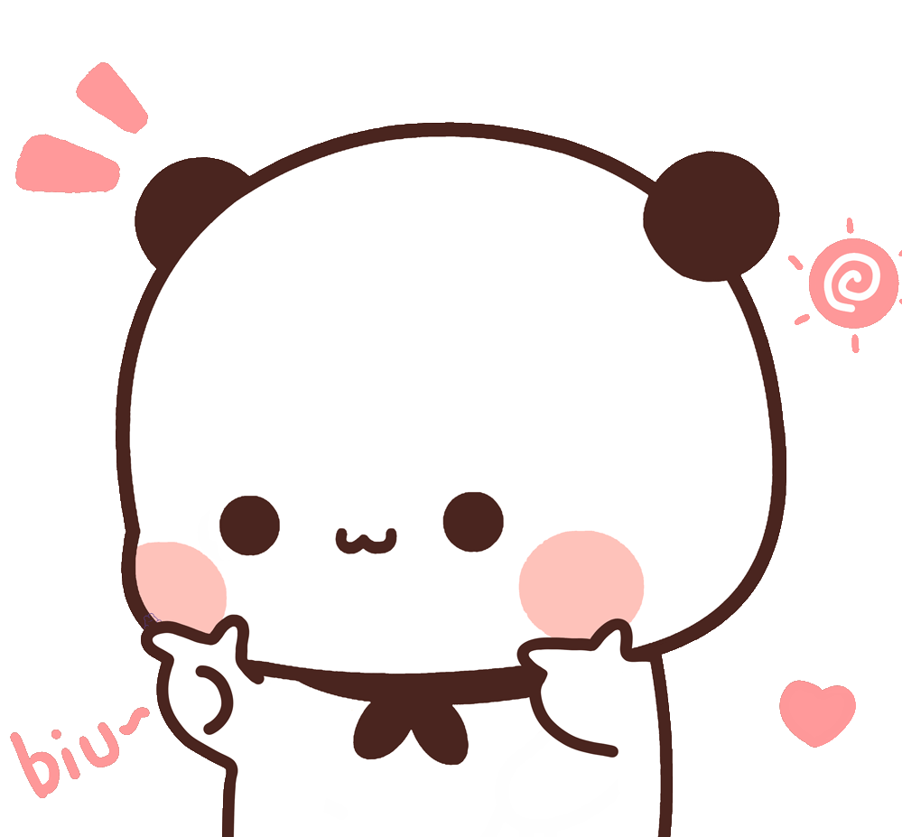
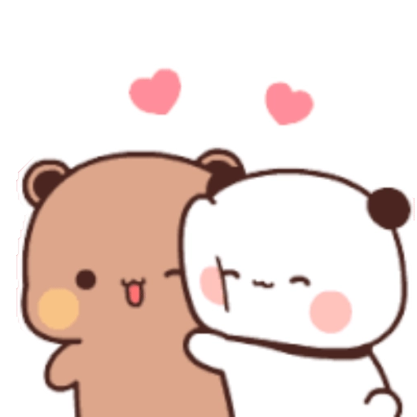
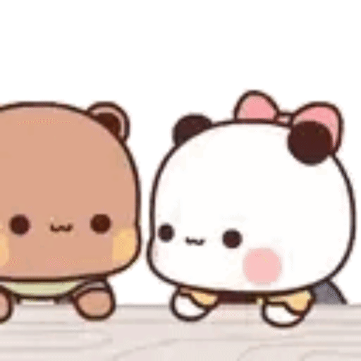

Sentuh LOVEnya!







haaii bb, today is officially our one month mensiversary (08 April - 08 May)
yuuppp ga kerasa ya kita udah ngejalanin hubungan selama ini. sebulan lebih kita bareng bareng and I'm happy with you, rasa sayang aku ke kamu ga pernah pudar sekalipun
walaupun kamu nganggep aku jutek (malas kali) aku juga bisa kasih kamu ini
if i could have shared this kind of love with anyone, i'm glad it's you. I'm lucky to have you sayanggg, aku nyaman sama kamu, jadi jangan kemana mana yaa :(
Yell, I love you so much. among all the sweet words, “I love you” is my favorite, because I genuinely love you
aku disini selalu ada buat kamu, jadi jangan ngerasa sungkan buat cerita ataupun ngeluh yaa.. aku bukan cuma 'pacar' aku bisa jadi segalanyaa termasuk tarot...?
akuu gapernah nyesel ketemu kamu kecil, karna aku yh always happy when I'm with you.
Yel, jangan berubah yaa? aku suka kamu versi kamu, bukan versi orang lain. jgn ikutin standar orang lain, because you have a charm that’s uniquely yours!
thankyou for being part of my life, no matter how simple our days are, they always feel better with you
seribu kali pun aku jabanin buat bilang I LOVE YOU ke kamuu, spesial buat ma boyfiee
I LOVE YOU YELL, PACARKU, SAYANGKU, KESAYANGANKU, I LOVE YOU MORE THAN ANYTHING AND ANYONEE, I LOVE YOU SOOORRRRRR MUCCHHH!
Klik untuk Geser!
sayangg, happy 1 month mensive! ini bakal jadi awal bulan yang special buat kitaa, karna hari ini tepat sebulan kita awalin hubungan. these 30 days have meant so much to me, because I got to go through every moment with you. terima kasih udah mau bareng sama akuu yel, makasi udah pilih aku diantara banyaknya orang lain karna aku tau aku pemenangnya hehehhe. walaupun kita sama' sering sibuk, but we always keep each other in mind. I always love you, jangan pernah mikir kalo aku ga pernah sayang kamu, itu hoak. pls stay wimme yaa kecill, and remember I'm always be there for you, cuz I'll supporting you, I'm always proud of youu! aku masih ga nyangka kita bisa jadi satu gini, kedepan dan selanjutnya aku bakal ada buat kamu. kalo kamu ngerasa ada yg aneh ke aku, bilang yaa, kita harus terbuka satu sama lain.
I hope we can be together forever bb, i love youu <3